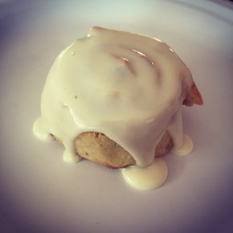

Gluten Free Ingredients
My little sister, Chrissy, has a gluten allergy. You would think that as a culinary school graduate, I could whip up anything she wants, whenever she wants it. Unfortunately, my only set back is the lack of gluten-free ingredients in our pantry. Furthermore, most run-of-the-mill grocery stores do not stock the type of ingredients I feel are necessary for gluten-free baking. I recently went into our local Acme on Long Beach Island, NJ, and asked for either xanthan gum or guar gum. The sweet teenager gave me a quizzical look and stated, “well, ma’am, since I feel like you just asked me for something in a different language, I’m going to have to say we don’t have that here.” Looking past the fact that I got ma’amed at the mere age of 25 (particularly when he couldn’t have been more than 7 years younger than me), I was severely disappointed that I couldn’t even find some tapioca or potato starch in spite of the fact that there was a whole aisle dedicated to gluten-free goods. While supermarkets are making some great strides towards stocking gluten-free items and ingredients, it’s fairly difficult to make some more advanced home cooked gluten-free dishes without the use of gums, starches, and wheat-alternative flours.
While I particularly love some cup-for-cup flours when my sister wants some gluten-free goods in a pinch, sometimes they just can’t compare finding the best mix for a particular baked good. Most of these cup-for-cup flours contain the gums and starches required to mimic the elasticity, chew, and crumb of a typical baked good. Recently, I used Pamela’s All Purpose Gluten Free Artisan Flour Blend to make some gluten-free cinnamon buns for my sister, and an almost 1:1 substitution was pretty successful (I added a bit more moisture, as you typically do in most gluten-free cooking).
These cinnamon rolls came out pretty darn good, but when not in a pinch, I’m planning on experimenting with the blend to develop some more elasticity (using gums) as these generally “fell apart,” according to my sister. Like I said, these flours are a great thing to stock in your pantry for when you’re in a pinch, but they aren’t the greatest if you’re looking for some more advanced textures.
I’ve compiled a list of typical gluten-free ingredients and their affects on a baked item:
Almond meal: This is a must for my pantry. Almond meal (or flour) is simply finely ground almonds (usually blanched). It has a grainy texture and a nutty flavor (an almond flavor due to the fact that is derived from almonds… obviously). Be sure to seal almond meal and flours in air tight containers in the fridge because these tend to go rancid quicker than whole almonds.
Buckwheat flour: This label is misleading, as buckwheat is actually a seed and is in no way related to wheat. It is a nutritional superstar in the fact that it is high in fiber, vitamin D, amino acids, and protein, and is a great source of energy. There are some studies that indicate that buckwheat flour lowers blood pressure and blood glucose levels. However, buckwheat flour brings along a pretty intense nutty or hoppy flavor that may not be welcomed by some (so keep this flour away from IPA haters… to all the IPA haters out there, you can’t sit with us).
Brown rice flour: Another nutritional superstar, brown rice flour is full of manganese, protein, vitamin B-6, dietary fiber, magnesium, phosphorus, copper, and potassium (just to name a few….). However, it is high in carbohydrates. There is a tendency for this flour to give finished goods a gritty texture, so try to select a very finely ground product. This flour may also taint your baked goods with a starchy, rice-like flavor.
Coconut flour: While this is an excellent wheat-alternative, coconut flour is not one of my favorites. I’m not the biggest fan of coconut (unless it is combined with some pineapple and rum), and this flour tends to leave a pretty strong dried coconut flavor. It also tends to leave a fairly gritty texture. However, it is high in fiber and low in carbs, so it’s a pretty big winner with the paleovores.
Cornstarch: Usually thought of a waste of pantry space in the form of a big, yellow, rubber container, cornstarch is actually a must have. It is a great binder and thickener of baked goods.
Gluten-free oat flour: Oats have been on the gluten-free debate docket for years. While oats are naturally gluten free, they are contaminated with wheat particles so often that celiacs and gluten-allergic sufferers should make sure to purchase oats and oat flours with a gluten free label. Oats and oat flours are a great substitute for wheat, but you may be left with a gritty, chewy texture reminiscent of oatmeal cookies that your mom baked and then tricked you into thinking they were chocolate chips instead of raisins. Scarred for life.
Glutenous rice flour: Like brown rice flour, glutenous rice flour may impart a starchy, rice-like (because it’s derived from rice) flavor to your baked goods. Don’t let the “glutenous” label throw you off. This flour (typically used to make mochi), is great for binding and developing a sticky texture. It is not the greatest choice when looking for a batter for frying, but its sticky, binding texture helps when developing baked goods.
Guar gum: Derived from guar beans, this powdery substance is excellent for thickening, binding, and allowing for rise in baked goods. Guar gum also protects from syneresis, or weeping (when water in a baked good is expelled after a period of time). As a gum, it allows for more resiliency and stretch in many baked goods, and replace the elasticity found in many wheat based items. Some studies show that guar gum may cause uncomfortable digestive side effects for people with gastrointestinal issues, but only in large amounts. In my opinion, a gum is absolutely necessary for the production of a baked good, so if this turns you off, try xanthan or locust bean gum.
Millet flour: A fine, powdery flour derived from millet (a grassy grain). This flour is high in starch and fat, but is low in carb content. Unlike most nut and rice flours, millet does not impart a very strong flavor to your baked goods. It creates a cake-like consistency in baked goods.
Potato starch: Similar to cornstarch, potato starch gives goods a soft, tender rise. It is an excellent thickening agent. One of the biggest drawback when using potato starch is that it often imparts a baked-potato-esque flavor and texture. It also may inhibit the browning of some baked goods.
Sorghum flour: One of the most desirable and under-appreciated flours on the gluten-free market, sorghum flour imparts a smooth texture and mild taste to baked goods, most similar to all-purpose flours. However (and this is a big one) sorghum flour is only best when used in a blend of gluten-free flours. Sorghum can produce a dry texture, so extra moisture may be necessary.
Tapioca starch: Typically used as a thickener, tapioca starch can create a tough final texture of a baked good. Unlike potato starch, tapioca starch will create a desirable browning in baked goods. It adds structure without grittiness, but should be used in combination with potato starch to avoid adding excessive toughness.
Xanthan gum: Used to develop elasticity and structure of a baked good, it is a thickener that is sometimes questioned due to its synthetic creation from bacteria. Like guar gum, xanthan gum can cause digestive issues in those with gastrointestinal problems.